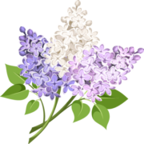
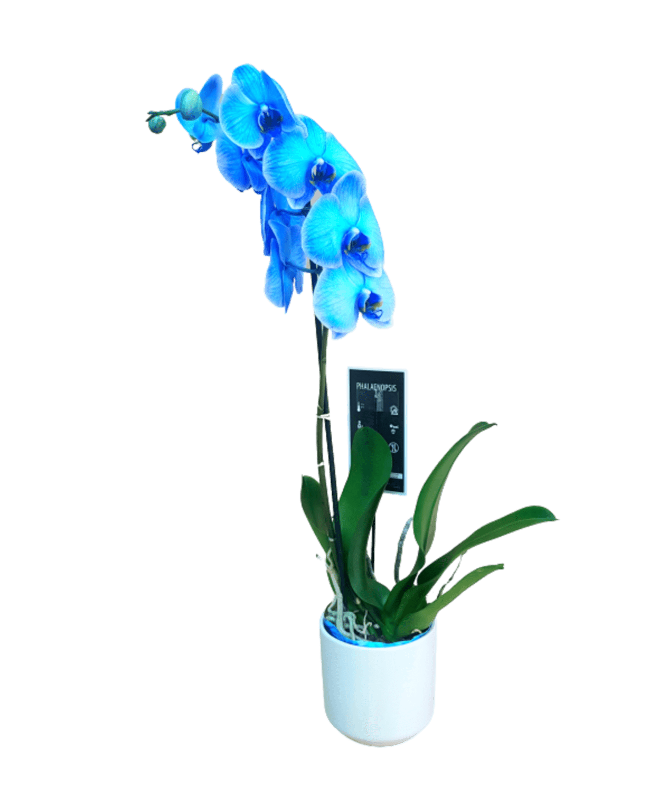
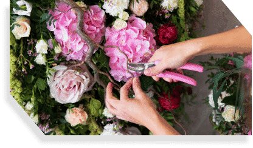

טיפול נכון בצמחים

טיפול בעציצים
מספר גדל והולך של בתי אב בישראל רוכש צמחים צמחים בעציצים בדרך כלל משמשים כדקורציה, זאת בשל היופי והעיצוב
הטבעי שהם מוסיפים לבית. על מנת לשמר אותם שיהיו כך לאורך זמן צריך להשקיע בטיפול בעציצים ובצמחים שבהם.
על מנת שהצמח בעציץ יגדל הוא זקוק לאור. צמחים שמוצבים בגינה או מחוץ לבית בדרך כלל יקבלו מספיק אור שמש
מעצם
היותם בחוץ, צמחים המוצבים בבית צריכים לקבל אור מחלון או באמצעות מנורת צמחיה מיוחדת. מכוון שמנורות
מיוחדות
אלו בדרך כלל אינן זמינות בבתים ויכולים לפגום בעיצוב הבית, אתם צריכים לדאוג להציב את העציצים במקום קרוב
למקור
אור (חלון).
עציצים משמשים בעיקר לדקורצית פנים הבית ולכן המיקום שלהם לא בהכרח יהיה על יד חלון בבית. במקרה כזה מומלץ
להזיז
את העציץ משך מספר שעות לפחות פעם בשבוע. פעולה זו תספק מספיק אור עבור הצמח שבעציץ על מנת להתפתח, כמובן
שככל
שתרבו בחשיפת העציץ לאור כך יותר טוב.
החלק החשוב ביותר בטיפול בצמחים הינו לוודא כי הצמח בעציץ מקבל מספיק מים. מים עוזרים לצמח לגדול ולחיות.
ללא
מים הצמח בעציץ ינבול תוך מספר ימים או שבועות. ישנם מספר דרכים לוודא כי הצמח בעציץ שלכם מקבל מספיק מים.
בדרך כלל, רוב העציצים שיוצבו בגינה, יקבלו מספיק מים מגשם, למרות זאת חשוב כי תשקו את הצמחים באופן קבוע
במידה
ואין מערכת השקייה אוטומטית כגון ממטרות.
הוראות טיפול בסחלב מסוג פלנופסיס
מיקום: חדר מאור בבית, ליד חלון מזרחי או מערבי. יכול לקבל קרינת שמש ישירה בבוקר או בערב(לא בשעות הצהריים בקיץ). פריחה: כשלושה חודשים. תלוי בגיל הצמח ובמספר ענפי הפריחה. השקיה: כפעם בשבוע, אפשר מי ברז רגילים. להשקות 1-2 כוסות ולתת למים לזרום מתחתית העציץ. לא להשאיר מים בצלחת של העציץ!!! השקייה בכל עונות השנה רק כאשר המצע מתחיל להתייבש. ניתן לרסס במים מדי יום על העלים והמצע. יש להחליף את המצע כולו מדי שנה. דישון: פעם בשבוע בדשן מעוזן, מדולל מאוד במים-רבע מהמינון המומלץ בתוית. בגמר הפריחה יש להמשיך לטפל בסחלב כרגיל.
טיפול בפרחים

אוקיי, קיבלת את משלוח הפרחים שלנו, מה עכשיו?
ובכן, ישנם מספר דרכים אשר יעזרו לך להאריך את חיי הפרחים: שימו את זר הפרחים במים נקיים מיד עם קבלתם,
מומלץ להחליף
את המים באגרטל מדי יומיים עם חידוש חתך לגבעולי הפרחים.
יש לבצע חיתוך אלכסוני בגבעול הפרח ב-45 מעלות, בעזרת מזמרה או סכין חד, זאת על מנת להגדיל את שטח הפנים של
גבעול
הפרח הטבול במים , ולאפשר אספקת מים רבה יותר אל הפרח.
להארכת חיי הפרחים ולשמירה על עמידותם של הפרחים, אין להעמידם בשמש ישירה, כמו כן גם לא מול תנור או מזגן
(קור/חום)
או מקור רוח (דלת או חלון). רצוי להקפיד להניח את זר הפרחים במקום קריר.
ניתן להוסיף תוסף מיוחד למים המונע התפתחות בקטריות במים וריקבון בגבעולי הפרחים.
יש להסיר כל עטיפה העשויה למנוע אספקת מים סדירה לגבעולי הפרחים.
סידורי פרחים בספוג – יש להוסיף מים לספוג אחת ליומיים.
מקווים שהעצות שלנו הועילו לכם.
סרטוני הסברה בYOUTUBE :
אנחנו כאן כדי להתייעץ!
טלפון: 072-3970177 / 03-6587050כתובת: ה' באייר 28, ת"א
Email Us
זכויות שמורות לFLOWER LAB